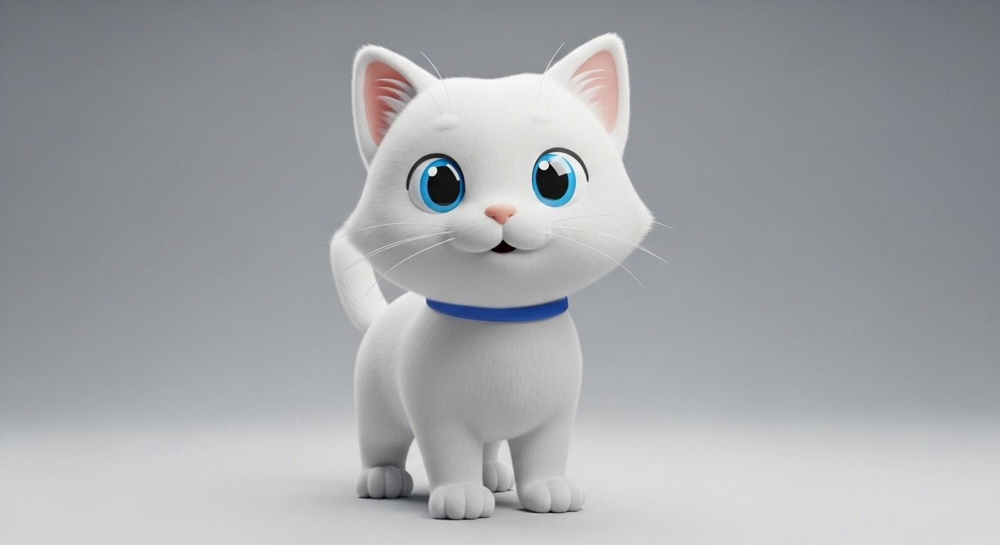
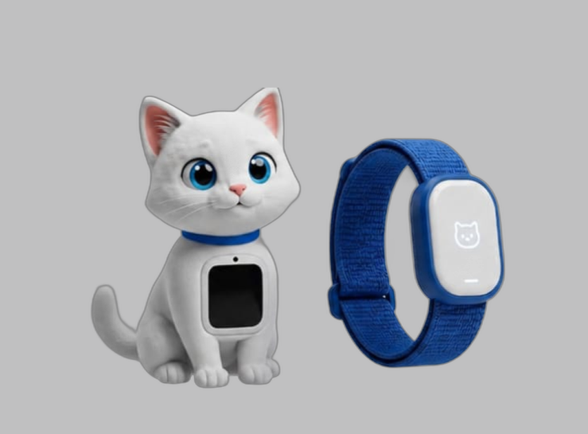
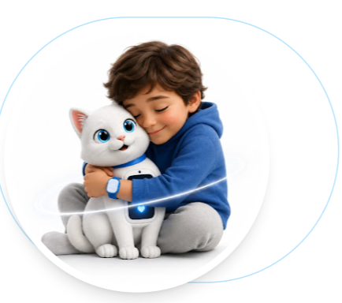

Desenvolvida para apoiar o desenvolvimento e a inclusão de crianças surdas através de estímulos táteis e visuais de alta precisão.

Tecnologia e afeto integrados para uma experiência educacional transformadora.

Mascote tecnológico que torna o aprendizado acolhedor e intuitivo para crianças.
Transforma sons em vibrações sensoriais, auxiliando na percepção rítmica.
Exercícios interativos que incentivam a prática da oralização de forma leve.
Integra estímulos visuais e táteis para uma experiência de aprendizagem completa.
Foco no bem-estar emocional durante todo o processo de desenvolvimento.
Soluções pensadas para transformar a rotina e ampliar as possibilidades de comunicação.
Estímulos sensoriais que auxiliam na percepção do ambiente de forma lúdica e segura.
Ferramentas de conexão que facilitam a comunicação e o acompanhamento do desenvolvimento.
Tecnologia assistiva que potencializa o aprendizado e a inclusão no ambiente escolar.

O projeto Lumis nasceu da necessidade de criar pontes onde antes existiam barreiras. Nosso objetivo é democratizar o acesso à tecnologia assistiva de ponta, permitindo que cada criança descubra o mundo através de novos sentidos.
Junte-se à comunidade Lumis e descubra como a tecnologia pode criar um futuro mais conectado.
Quero a minha pulseira